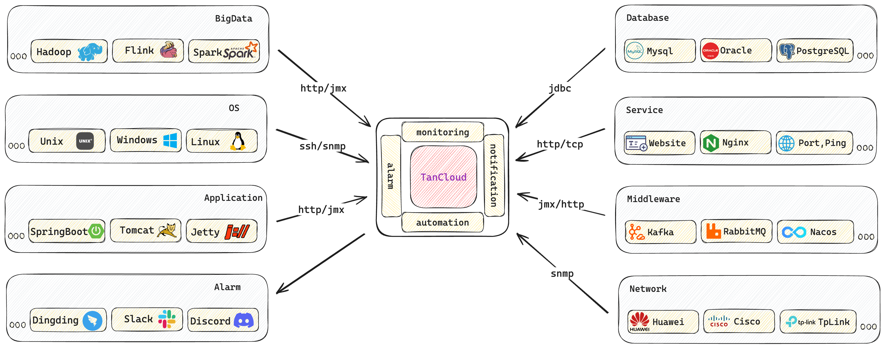

Opensource Monitoring Cloud Service
Build by the founders of Apache HertzBeat (incubating), the cost-effective easy-to-use monitoring

Easy to use
- Full web-based operations with just a click of a mouse
- No need to deploy agent
- Monitoring, alarm, notify all in one
Multi Support
- Protocol Http, Jmx, Ssh, Snmp, Jdbc and more
- Monitoring web, database, cache, os, server, middleware, bigdata, cloud-native, network etc
- Flexible threshold rules and timely notifications delivered via discord slack email webhook more
High Performance
- Horizontal expansion of multi-collector clusters
- Multi-isolated network monitoring and cloud-edge collaboration
- Powerful custom monitoring capabilities
Opensource
- The code is completely open source
- From the Apache Foundation Incubator
- Healthy and open community
Built based on Apache HertzBeat (incubating)
Apache HertzBeat (incubating) is a easy-to-use, open source, real-time monitoring system with agentless, high performance cluster, prometheus-compatible, offers powerful custom monitoring and status page building capabilities. TanCloud, crafted by the HertzBeat founding team, is a monitoring product that builds on the strengths of HertzBeat, adding advanced enterprise-level features. HertzBeat if full opensource，beloved by developers and operations engineers, with a highly active project. It's a healthy, open and vibrant community
200+
5000+
100k+

Apache HertzBeat
Open source, real-time monitoring system with agentless, high performance cluster, prometheus-compatible, offers powerful custom monitoring and status page building capabilities

TanCloud Enterprise
Based on Apache HertzBeat (incubating), TanCloud Enterprise Edition offers more advanced enterprise-level features, higher performance, comprehensive security, and timely professional support.
TanCloud Online
Online cloud service, with no deployment or maintenance required. Just log in to start cloud monitoring. Cloud-edge collaboration, stable cluster, intranet edge isolation networks and encrypts data end-to-end.
Cloud Service
No more cumbersome monitoring systems for small teams and individuals to monitor their website resources. Sometimes, the monitoring system consumes more resources than the website itself. TanCloud Monitoring Cloud Service, start your service monitoring with just a Login Now.Security is paramount, we encrypt the entire chain of accounts and monitoring keys.
Multi Support
Comprehensive monitoring capabilities for websites, APIs, applications, databases, operating systems, cloud-native environments, and networks. Powerful custom monitoring capabilities through monitoring templates.
Flexible threshold alerting, alert aggregation, and silencing. Supports alert notifications via email, SMS, webhook, DingTalk, WeChat Enterprise, and Feishu robots.

Cloud Edge
High-performance cloud-edge collaboration, supporting horizontal expansion of collector clusters. Users can self-deploy edge collectors and collaborate with TanCloud cloud service data to ensure data isolation and security. Monitor your intranet environment by simply deploying a collector with minimal resource usage. Log in and register to manage monitoring resources across multiple edge-isolated network zones.